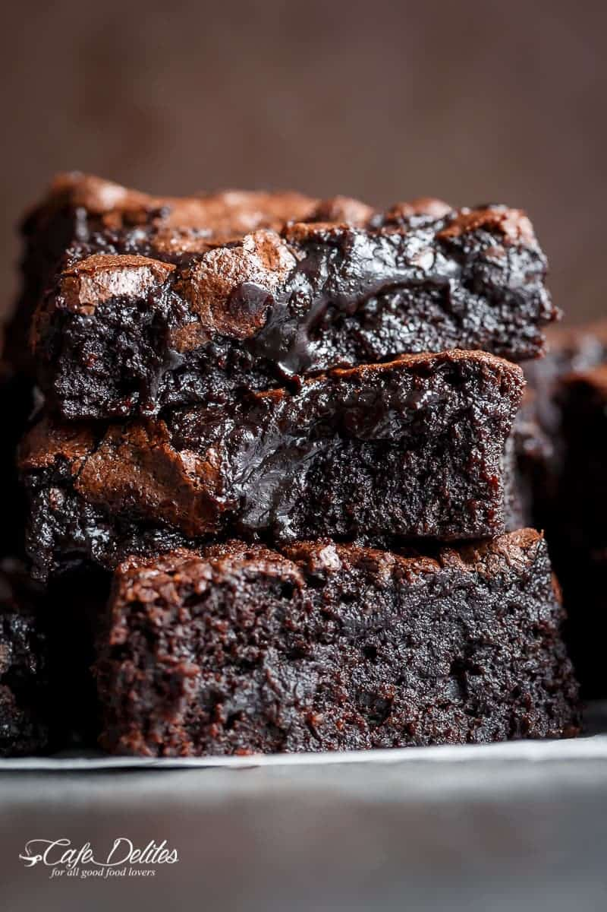

Brownies

Description
The best, fudgy one bowl cocoa brownies! A special addition gives these
brownies a super fudgy centre without losing that crispy, crackly top!
Ingredients
- 1/2 cup unsalted butter, melted and HOT
- 1 Tbsp cooking oil, (coconut oil is fine)
- 1-1/8 cup superfine sugar (caster sugar, or white granulated sugar can be
processed finer)
- 2 large eggs
- 2 tsp pure vanilla extract
- 1/2 cup all purpose flour
- 1/2 cup cocoa powder
- 1/4 tsp salt
Steps
-
Preheat oven to 350°F.
-
Lightly grease an 8-inch square baking pan with cooking oil spray. Line
with parchment paper (or baking paper); set aside.
-
Combine hot melted butter, oil and sugar together in a medium-sized bowl.
Whisk well for about a minute. Add the eggs and vanilla; beat until lighter
in colour (another minute).
-
Sift in flour, cocoa powder and salt. Gently fold the dry ingredients
into the wet ingredients until JUST combined (do NOT over beat as doing so
well affect the texture of your brownies).
-
Pour batter into prepared pan, smoothing the top out evenly. (OPTIONAL:
Top with chocolate chunks or chocolate chips.)
-
Bake for 20-25 minutes, or until the centre of the brownies in the pan no
longer jiggles and is just set to the touch (the brownies will keep baking
in the hot pan out of the oven). If testing with a toothpick, the toothpick
should come out dirty for fudge-textured brownies.
-
Remove and allow to cool to room temperature before slicing into 16
brownies.